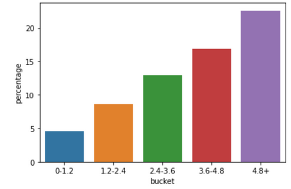

Prediciting Home Runs in MLB
Introduction
Though baseball is a team sport, it really comes down to a series of 1-on-1 matchups between the pitcher and batter. Because of this, it becomes easy to isolate all other variables and just focus on the relationship between those two players, making baseball most likely the easiest sport to analyze and predict performance level. There are many projection systems out there that can usually be relied upon for an accurate prediction on a player’s full season value, but there are far fewer that will produce game-by-game projections, simply due to the smaller sample size leading to lower predictability. The type of projection that has the least professional documentation online is, without a doubt, the single game home run projection model. There are a few reasons for this; As was just mentioned, single game projections are very unpredictable, but also, because home runs are one of the rarest outcomes a batter-pitcher matchup(also referred to as a plate appearance) can produce. Throughout the course of any given game, there will usually be around 75 total plate appearances, and the majority of games only produce around 2-3, meaning that, for any single plate appearance, the odds of hitting a home run are around 3%. Since both teams have a finite number of hitters, you could increase those odds by taking the 3 plate appearances a player gets in one game and saying they will hit a home run in one of them, but even then the odds are no more than ~12% at best.
The attempts that have been made to predict these home runs with greater accuracy by incorporating previous data for both the batter and the pitcher often fall short by using too general of measurements. For this model, the key differentiator will be the use of these statistics on a per-pitch basis. This extra level of depth will help us assess each matchup based on the unique skills and tendencies of both the batter and pitcher, and, hopefully, will result in a greater accuracy than using aggregate stats based on a player’s entire body of work. In undertaking this task, we will be using a variety of statistical models to assess the accuracy and performance of the model. Namely, we will be utilizing a lasso linear regression model, a logistic regression model, and a gradient boosting algorithm. The main goal of this project is to determine if using pitch-level analysis makes predicting home runs significantly more accurate than using overall, aggregate statistics.
Data
To acquire data for this project, I utilized the pybaseball library available on Python. I began my dataset in the year 2015, the beginning of the so-called “Statcast Era”, because many stats I would like to use are not available until then. I then collected every pitch either seen (in the hitter’s case) or thrown (in the pitcher’s case) so long both of these criteria were met:
- The player threw/saw at least 1,000 pitches total in that season
- The player saw/threw that individual pitch type at least 50 times.
The season-total minimum is instituted to ensure that all players in the sample saw/threw multiple different pitch types, whereas the singular-pitch minimum is in place so that there won’t be too many small samples with unrealistic results. All told, even with these qualifications, the sample size comes to 4.3 million individual pitches for the pitchers, and 4.8 million for the hitters.There we also 11 different pitch types tot analyze for pitchers and 9 for hitters, which I can cover briefly right now:
- FF: fastball
- SI: sinker
- SL: slider
- KC: knuckle-curve
- FS: splitter
- ST: sweeper
- CH: changeup
- CU: curveball
- KN: knuckleball
- FO: forkball
These last 2 won’t show up in the hitters analysis due to too few pitchers throwing them. From this step, we needed these pitches aggregated on every player, every year they pitched, and every pitch type they threw. With that aggregation complete, we now have just over 13,000 observations for the hitters, and just over 9,000 for the pitchers. Here is a snapshot of the data:
(Note: I will define the variables thoroughly in the Machine Learning Model section)
As you can see, the variables are currently in totals after aggregation. This can prove to be an issue because not every pitch was seen equally, which is shown by the barplot below:
To remedy this, we will put all stats on a rate basis, so the count of the pitches becomes irrelevant.
However, our dataset is not complete just yet. Though we have rates, we haven’t yet adjusted for the offensive environment just yet. Over this 10 year dataset, the definition of “average” changes a significant margin in almost every variable we use. This is best illustrated in the case of fastball velocity. In 2015, the average fastball velo was just above 92mph, and in 2024, it has increased to more than 94mph. To someone who is unfamiliar with the way baseball is played, this may seem rather insignificant, but a 2mph difference can have a large impact. To illustrate this point, here is a graph of the average wOBA against all fastball velocities. Note that wOBA, or weighted on-base average, is an all-encompassing stat that aims to accurately measure a player or team’s overall offensive contributions to run production.
The difference between the 92 and 94 mile per hour brackets is roughly 20 points of wOBA production, which is more than significant enough to warrant consideration in this dataset. To solve this shifting-averages dilemma, we will take the average of every rate-based stat for each 2-year period, starting with 2015-16 and working up to 2023-24, for a total of 5 different “buckets” for stats to fall into. We will then compare the average stat for that pitch in that time frame to the stat of a particular player, and divide the player’s stat by that average to get a time period-normalized metric for each variable. So, for example, if a player from 2017 has a “whiff” rate of 30% on fastballs, and the average on fastballs in the 2017-2018 timeframe was 20%, that player’s “new” value would be a 1.50, or 50% higher than the league average. With this in place, it becomes far easier to compare players across different offensive environments. Here is an example of what our “final” dataset looks like after morphing:
With our dataset transformations complete, it is time to move on to the machine learning portion.
Machine Learning Model
For this model, we will be utilizing classification models to test the capabilities of our dataset. Since we are attempting to predict home runs in individual matchups, we will be using real life webscrapped matchup data with our variables, as well as whether or not the matchup resulted in a home run. Over the past 10 years, we were able to scrape over 109k matchups that involve both a hitter and pitcher we have data on. Note that, since we want to see if this model has any predictive power, we are using year n data to predict year n+1 matchups, so 2015 matchups could not be included for this. Before we continue any further, let’s define all the variable we will be using:
Universal Variables
- xwOBAcon(expected weighted on-base average on contact): This stat should be the most correlated to homeruns. Essentially, what xwOBAcon attempts to measure is the expected production of a hitter based on their launch angle and exit velocity on batted balls. I chose a stat like this over something like expected Slugging Percentage because I felt that, in the long run, xwOBAcon does a better job of telling who the better hitters are.
- Barrel Rate: A “barrel” is a batted ball that meets a certain threshold of exit velocity-launch angle combination that typically produces the most desirable outcomes
- Exit Velocity (EV): The average of all the exit velocities that pitch type registered
- Fly Ball (FB): The percentage of batted balls on that pitch that resulted in a fly ball, which is a batted ball that achieves a launch angle between 20-50 degrees
- Weakly hit: Essentially the antithesis of barrel rate, a ball that is hit with a specific exit velo-launch angle combo that results in the least desirable outcomes
- Hard-Hit (HH): A batted ball with a, exit velocity registered at 95mph or greater
- Whiff: The percentage of swings where the ball was missed entirely
- Launch Angle (LA):The average of all the launch angles that pitch type registered
- Ground Ball (GB): The percentage of batted balls on that pitch that resulted in a ground ball, which is a batted ball that achieves a launch angle under 10 degrees
- Line Drive (LD): The percentage of batted balls on that pitch that resulted in a line drive, which is a batted ball that achieves a launch angle between 10-25 degrees
Pitcher-Only
- Z-move/X-move: The amount of vertical/horizontal movement the pitch experiences while traveling from the mound to the home plate, respectively.
- Spin Rate: The average amount of RPMs a pitch generates
- Velocity: The average velocity a pitch is thrown with
- Extension: How far the pitcher can extend his front leg off the mound when delivering the pitch
With our variables defined, we now need to run our models. As previously stated, we want to use classification models for the outcome prediction, so we will be utilizing XGBoost gradient boosting, as well as logistic regression.
One last note before we discuss the model performances; In an effort to keep the variable count from ballooning out of control, we decided to use a weighted average of both the hitter and pitcher’s performances against all pitch types, so we will only end up with one number for each variable. Here’s a SIMPLE example of how that works:
- Batter has a “barrel” rate of 1.8 against fastballs and a rating of 2.0 against curveballs
- Pitcher has a barrel rate of 1.4 when throwing fastballs, and a rating of 1.0 for curveballs
- Additionally, Pitcher throws his fastball 40% of the time, and the curve 60%
- First, we take the averages of the barrel rates
- So the overall fastball barrel rate will be 1.6, and 1.5 for curveballs
- Next, we use a weighted formula based on how often they are thrown
- So 1.6(0.4) + 1.5(0.6) = 1.54
- 1.54 is the overall barrel rating for the matchup
For the pitcher only stats, we used the same weighted-average idea, just without involvement from the hitter data. Now it is finally time to discuss model performance.
Classification Model and Threshold Issue
Upon running both our logistic regression model, as well as our gradient boosting algorithm, we achieved accuracy scores of over 90% on both. However, a quick inspection into the results will reveal that every prediction, all 109k, we projected as a 0, meaning neither model predicted a single homerun. A closer look into the logistic regression model in particular reveals that the highest probability of a home run assigned to a matchup was just over 37%. Now, since home runs are a very rare occurrence, this all-zeros approach netted a very high accuracy, but this is far from a satisfying answer.
Since no matchups achieved a 50% probability, I assumed it must be a problem with the threshold, and figured I would look at a double density plot to see what would work better. After viewing the plot, I came to the conclusion that a threshold of 0.0915, or a 9.15% chance of occurring, would work best here.
You will notice that, on top of being an extremely low threshold, both 1’s and 0’s have extremely similar density plots. This is likely due to both a combination of home run prediction being a very complex problem, as well as potentially lower-quality data. Once rerunning the logistic regression model with the threshold, this led to a confusion matrix with the following distribution:
Though it is nice to see the model actually predicting 1’s, the metrics on this model are fairly poor. The accuracy and recall both sit at 57%, which isn’t terrible when considering the difficulty associated with predicting home runs on matchups basis. However, the precision sits at a staggering 12%, and the overall enrichment is 1.29. Though these metrics aren’t outright bad, none of them show a great deal more success than just random guessing, which remained true when I calculated the AUC graph:
Now that it has been firmly established that our classification models simply won’t work very effectively, I thought of one more method that might be able to identify matchups with a vastly increased probability of a home run, if outright prediction won’t work.
LASSO Regression and Predicted HR Ratings
When morphing the dataset, I made sure to include a variable called “HR”, which is expressed as the player’s home run percentage on batted balls. Now that the classification models have proven to not be the most effective tool for this project, I will be putting all the other variables through a LASSO regression model in order to predict the player’s home run variable, and then seeing how these predicted HR ratings compare to the real ones.
Regression Weights, Standard Error, and Level of Significance
After running our regression model, here are the results for both the batters and pitchers.
Batters
A few notes regarding these results:
- Most features that were deemed insignificant simply do not have that much effect on the model (hh,whiff,la)
- Exit Velocity is the main exception to this, as it owns one of the largest coefficients of all features, but ev is likely deemed insignificant due to having significant multicollinearity with both xwOBAcon and barrel rate, as well as having the largest standard error by far.
Despite these features lacking significance, the model as a whole is statistically significant, so we can leave them in the model
Pitchers
The Pitcher Analysis Problem
With hitters, the analysis is straightforward; The inputs that they can control are also the inputs that correspond to home run production. Things like average exit velocity, fly ball rate, and xwOBAcon are all well within the hitters control. However, this does not also apply to pitchers. For pitchers, there are stats that correspond to home runs, such as the aforementioned xwOBAcon can exit velocity, and there are stats that they can control, such as spin rate, pitch velocity, and pitch movement. The two categories are, essentially, mutually exclusive. The reason we include the pitcher-controlled stats is because we want these ratings to be predictive, and if we only include stats that pitchers have little control over, there will be zero predictive value to the model. So, even though stats like x_move, extension, and spin rate all have no significance, they must be included to ensure that the model retains some predictive value.
Model Accuracy
Now that we have run our regression model, we must test to see if the model is working as intended. We have a variety of ways to check the accuracy of our model, and we can begin with the r-squared correlation coefficients, broken down by hitters and pitchers:
For current year value’s, the model performs very well, with a value that is generally considered “strong” for both hitters and pitchers. However, we are attempting to see if this model has some predictive power as well, and for that the results are more mixed. The hitters have a moderate correlation, which, for trying to predict something as rare as home run rate, is perfectly adequate, arguably even good given the circumstances. The pitcher’s however, remain extremely difficult to predict for the future, and this is something that exists for all of baseball analysts. Even the most in-depth pitcher stats you can find usually can’t manage more than a 0.2-0.3 R-squared value year over year.
Another, similar method of measuring the accuracy of our model would be to use a modified confusion matrix with redefined parameters. Since our outcome is a continuous variable, we can change the definition of a 1 or 0 to occur if the predicted variable is within a certain distance of the actual. For this, I ran 2 tests: One to see if the predicted value was within 30% of the actual, and one to see if the predicted value was within a range of 0.5 in either direction (on a scale that ranges from 0 to 8). For the 30% range, I achieved an accuracy of 52.4%. While this doesn’t sound very impressive, bear in mind that the vast majority of actual HR values are lower than 1, and almost all are lower than 2, so to be within 30% means likely being within 0.3 or less, which is a perfectly acceptable margin of error given the overall range of the values.
Our other method of testing accuracy, being within a 0.5 range, resulted in 71% correctly assessed values, so it is safe to say that both this and the R-Squared values show our model is working as intended. However, since we want this model to be predictive, we have one more method of confirming it works.
Calculating Matcup-Specific Ratings
In order to test whether or not these ratings will be adept at predicting future outcomes, we will use the weighted-average formula from earlier with the predicted home run ratings, which will create an overall rating. The probability of a home run being hit should, in theory, increase as this rating increases. We will break these ratings down into buckets, and measure the success rate of each bucket by taking the number of home runs hit divided by the number of matchups in that bucket. Since we are also testing whether or not using pitch-by-pitch stats produces better results than using aggregate statistics, we will have multiple control tests as well.
For the first control, we have ratings that were calculated using our lasso-predicted home run ratings, but used aggregate statistics instead of pitch-level:
Though there appears to be an upward trend for most of the graph, the steep decline for the highest ratings isn’t very confidence inspiring, and the fact that the percentage of home runs is lower in the 4+ bracket than the 2-3 bracket indicates that these ratings may not be very accurate.
Next, we have the ratings created by using pitch-level data, but with the actual prior-year HR ratings, instead of the lasso-predicted ones:
The shape of this graph leads us to believe that the pitch-level data is more accurate at predicting future HR outcomes, as the top group is essentially tied with the second highest bracket, instead of being far worse. However, this still isn’t as conclusive as we would like. Just under a 16% chance of a home run is nice, but we are looking for better results out of our top group.
Lastly, we have the ratings as calculated using the pitch-level data AND our lasso-predicted ratings, which we believe should yield the most accurate results:

As can be discerned from the graph, this method produced the most desirable results. For the most part the results are the same as the prior graph, but the top bracket has now produced a rating of just over 23%. When you consider that the usual chance for a batter-pitcher matchup with multiple plate appearances to result in a home run is right around 10%, using these ratings to find a grouping where the odds are well north of 20% is phenomenal. Though this isn’t a traditional method of measuring success, the fact that this third method performed noticeably better than the first two indicates to us that the lasso regression model worked as intended, and that pitch-level data does result in more accurate predictions.
Real-World Applications/Conclusion
Unfortunately, since this project deals solely with the world of sports, it is quite limited in terms of real world application. I truthfully don’t like to condone this in a paper that is aiming to be professional, but the only context in which I think you could use this information would be the realm of sports betting. Since the LASSO regression model works by loosely calculating a probability of a matchup resulting in a home run, those probabilities can be used to calculate a perceived “value” over a given sports book. For a quick example:
- Player A is a hitter facing player B, a pitcher
- The matchup rating for these players is 5.3, so we can assumes the odds of a home run being produced is a little over 20%
- The stated odds of this matchup resulting in a homerun is +500, which we can easily calculate to being ⅙ or a 16.7% chance
- Since the stated odds are lower than the projected odds based on the lasso formula, we could now consider it a “value” selection, where betting on this player to hit a home run would theoretically result in a positive EV given enough simulations of the event.
Alongside working on this project, I actually did attempt something like this, albeit with “theoretical” money. Every day of the 2025 baseball season, I selected the 5 players with the greatest disparity between my calculated probability and their stated probabilities and bet 5 theoretical dollars on them. Doing this for a little over 3 weeks, I was actually able to make a hypothetical profit of 37%, so even though it was a small sample size, it would appear that this method has some potential.
Outside of betting, another thing that this could possibly be used for would be as a basis for a full game projection system. Since we are attempting to predict the outcomes of matchups, we could extend this past homeruns and attempt to predict the probability of all sorts of events. T Using that, you could run enough simulations of these matchups that you could predict the 50th percentile outcome of any given game. While that in itself might not have any non-betting applications, it would be very fun to try, and maybe something I tackle in the future.
Overall this project taught me a lot about the applications of machine learning models. Specifically, it taught me the importance of high-quality data when it comes to classification models, and it also taught me how to think outside the box and use machine learning models in ways I hadn’t really thought of before, such as creating projected HR ratings with the use of LASSO. Though my conclusion wasn’t a very traditional method of success, I think it showed enough promise that I can consider this whole project a valid use of my time. To wrap things up, I would just like the reiterate some of the shortcomings I touched on in my presentation:
- These ratings do not include modifiers for either handedness splits or stadium factors. For context, most hitters usually perform better when facing a pitcher of the opposite hand (so a lefty hitter will hit better vs a right pitcher), and some stadiums have dimensions that allow more home runs to be hit. Though both of these likely would’ve played a minimal role in the outcomes, it is certainly worth mentioning
- Perhaps the biggest shortcoming is the use of strictly prior-season data. Most high level projection systems and game simulation engines will use a combination of multiple seasons worth of data, including the current one. This is something that simply had to be cut for time constraints, but I certainly would factor it in if I continue to flesh out this project.
- Another one of the largest shortcomings was the lack of ratings for any other pitcher besides the starters. These ratings only factor in pitchers that pitch around 60% of the game, called starters, but the pitchers that pitch afterwards, called relievers, were not. This would be tricky to do given the unpredictability of which reliever will pitch when, but it is still worth mentioning that these ratings aren’t emblematic of the entire game, which I originally set out to do.
- Finally, while working on this project, bat-tracking data was released for MLB, But due to the timing, and the fact that it only exists for the 2023 and 2024 seasons, I was unable to include it as part of the analysis. Still, as indicated by the graph below, it is most certainly impactful on home run hitting capabilities